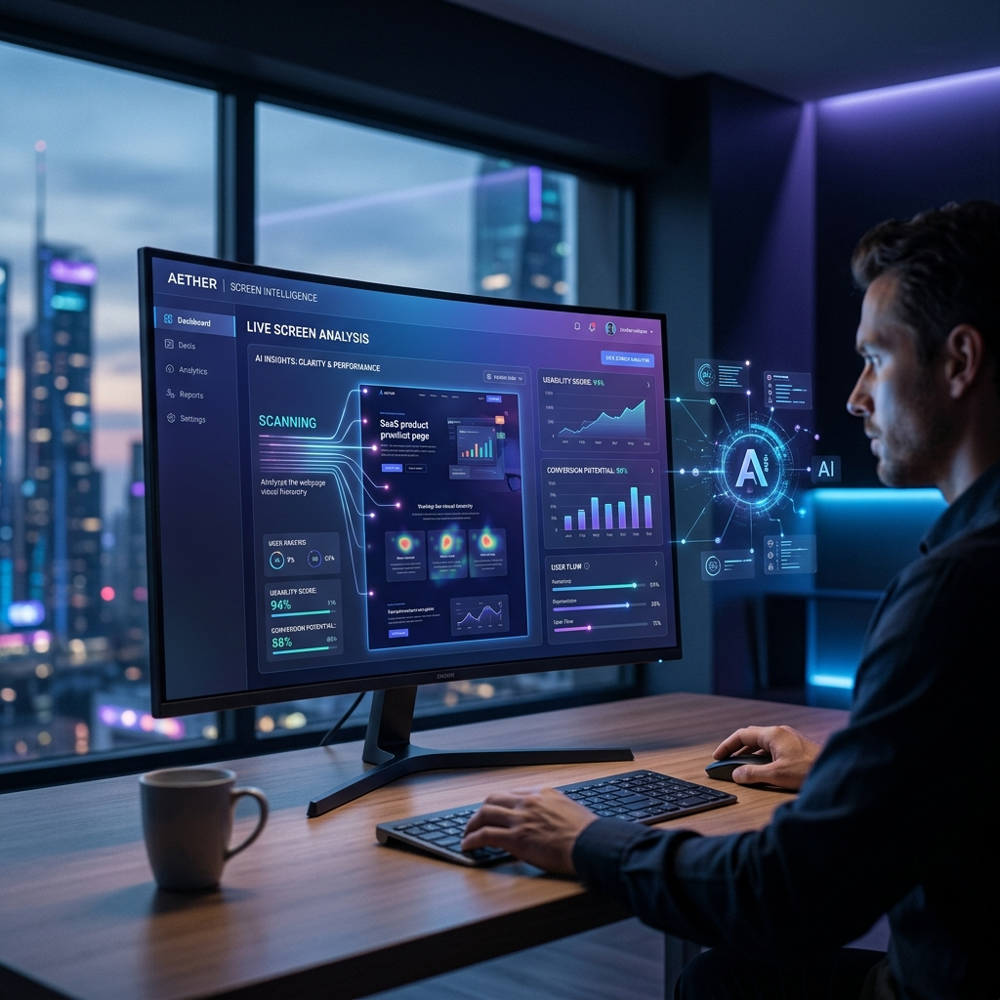

GemmaSight Documentation
Gemma 4 & Transformers.js を活用した、次世代の画面・音声統合解析ツールのマニュアルです。

広がる活用シーン
GemmaSightは、単なる解析ツールではありません。画面上の視覚情報と音声を組み合わせることで、工夫次第で活用の幅は無限に広がります。
作業記録の自動化
日々の業務内容をリアルタイムで要約。何にどれだけ時間を使っているか、作業ログとしての振り返りに活用できます。
動画・配信のアーカイブ把握
長時間の動画やライブ配信の内容を時系列で追跡。重要なシーンや発言を抽出し、効率的なキャッチアップを可能にします。
画面変化の自動検知
株価やシステム監視など、特定の条件やパターンが出現した際にAIが検知。正規表現と組み合わせて通知を受け取れます。
自由なアイデアで
プログラミングのデバッグ補助、ゲームの実況解析、プレゼンの振り返りなど、あなたのアイデア次第でまったく新しい使い方が見つかります。
インストール方法
アプリケーションのインストール
ダウンロードしたアーカイブを展開、またはインストーラーを実行します。
- macOS (.dmg): DMGファイルを開き、アイコンを「Applications」フォルダへドラッグ＆ドロップしてください。
- Windows (.exe): インストーラーまたは実行ファイルを実行してください。

セキュリティ許可 (macOS)
macOSの場合、開発元が未確認のため開けないという警告が表示される場合があります。その場合は、システム設定の 「プライバシーとセキュリティ」 を開き、 「セキュリティ」 セクションで「このまま開く」を選択してください。


アクセス権限の許可 (macOS)
画面解析や音声解析を正常に行うために、初回実行時に 「画面収録」 および 「システムオーディオ録音（またはマイク）」 の許可が求められます。

正しく動作しない場合は、システム設定の 「プライバシーとセキュリティ」 内の各項目で GemmaSight にチェックが入っているか確認してください。

各フォーム・入力の解説
Source Type
解析対象を選択します。
- Screen / Window: 特定のディスプレイやウィンドウ。
- WebCam: 内蔵または外付けカメラ。
- Video File: ローカルの動画ファイル。
Audio Source
音声解析に使用するソースを選びます。マイク入力や、動画ファイル内の音声（Internal）をサポートしています。
Model Selection
解析エンジンを選択します。
- E2B (Rapid): 高速なレスポンスを重視。
- E4B (Smart): より詳細で正確な分析。
Prompt
AIへの指示を記述します。デフォルトでは日本語での要約が設定されていますが、自由にカスタマイズ可能です。
Sampling Interval
「ライブ解析」を行う際の間隔（ミリ秒）を指定します。デフォルトは2000ms（2秒ごと）です。
Regex Notification
解析結果に特定のパターンが含まれた際、OS通知を出し、ログに記録する設定です。
基本的な操作方法
1. 解析範囲（クロップ）の設定
画面中央に表示される青枠をドラッグして、解析したい範囲を指定します。枠の右下を掴むことでサイズ変更も可能です。

2. モデルのロード
初回起動時やモデル変更時は「Load Model」をクリックしてください。WebGPUを利用したモデルがブラウザ（Electron）のキャッシュにダウンロードされます。
3. 解析の実行
Capture & Analyze をクリックすると一回限りの解析を行います。Start Live Analysis を押すと、設定した間隔で継続的な解析が行われます。